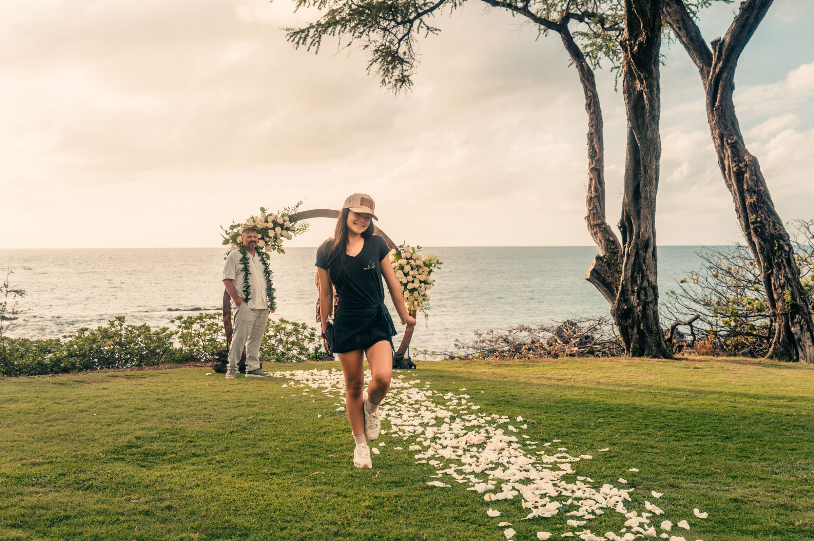

Custom Maui wedding flowers & lei.
Aloha, I'm Mya Ige.

Flowers with a story.
With a keen eye for detail and a warm, personable approach, I create floral arrangements that tell the story of your wedding, engagement or romantic photoshoot.
My family has been on Maui for over three generations. We own and operate our own flower farm, and I hand-create every arrangement myself.
★★★★★ 5.0 · Read Āpuakea's Flowers reviews on Google
Visit Apuakea's Flowers Website ↗Every arrangement, grown and gathered on the island it's photographed on.
One less thing to plan from home.
Coordinating florals from out of state is one of the more stressful parts of planning a Maui wedding, vow renewal or proposal. Because Mya works directly with Wailea Photo, arrangements can be booked as part of your session planning — no separate vendor search, no guessing whether flowers will arrive fresh.
Every lei, bouquet and arch arrangement is grown, gathered and assembled locally, timed to be at its freshest for your exact session time.
A few favorites.
A small sample of Mya's arrangements alongside our clients — see the full collection on Instagram or in the client gallery below.


What clients ask before booking flowers.
Do I need to arrange my own flowers, or can Wailea Photo provide them?
Wailea Photo works directly with Mya Ige of Apuakea Weddings, so you can add a custom lei, bouquet or floral arrangement to your session without sourcing flowers yourself.
How much do custom floral arrangements cost?
Pricing depends on the type and size of arrangement — lei, bouquets and ceremony florals are each priced individually. Contact Mya directly for a quote based on your session.
Can flowers be matched to my outfit or session colors?
Yes. Mya can design arrangements around your color palette and the mood of your session, from soft neutrals to bold sunset tones.
How far in advance should I order flowers for my session?
A few weeks' notice is ideal, especially during peak wedding season, since arrangements are hand-grown and gathered to order rather than shipped in.
Are the flowers delivered to the beach, or do I need to pick them up?
Mya typically coordinates delivery directly to your session location, so your flowers are fresh and ready when your photographer arrives.